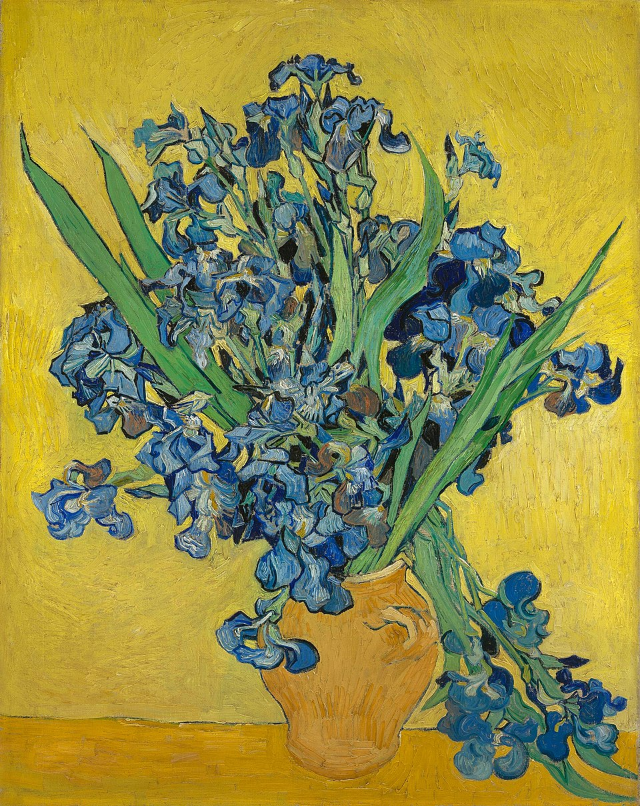
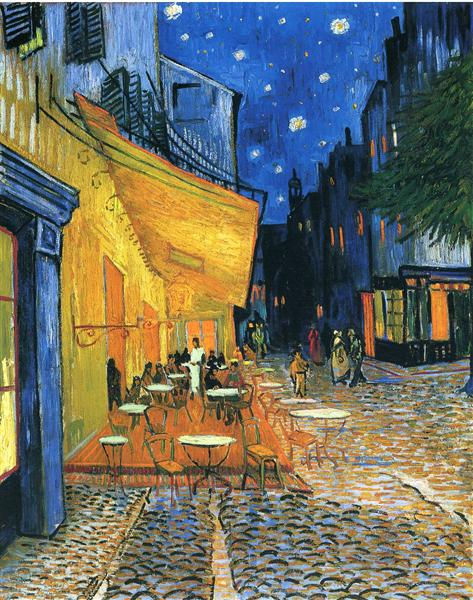

✨ Vincent van Gogh ⭐
🎂 Vincent Van Gogh
🎨 TÁC PHẨM KHÁC
Vincent van Gogh, sinh năm 1853 và mất ngày 29/07/1890, lớn lên ở miền nam Hà Lan, nơi cha ông là một mục sư. Sau bảy năm làm việc tại một công ty nghệ thuật thương mại, khát vọng giúp đỡ nhân loại đã thôi thúc Van Gogh trở thành giáo viên, nhà thuyết giáo và nhà truyền giáo—nhưng không thành công. Trong thời gian làm nhà truyền giáo giữa những người thợ mỏ ở Bỉ, ông bắt đầu vẽ một cách nghiêm túc; cuối cùng, bị chính quyền nhà thờ sa thải vào năm 1880, ông đã tìm thấy thiên hướng của mình trong nghệ thuật.
✨ The Starry Night ✨ — 🌟 Đêm Đầy Sao ⭐
Vẽ năm 1889 | Hiện lưu tại MoMA, New York
▶️ TÁC PHẨM The Starry Night
Về mặt ý nghĩa, tác phẩm là sự giằng xé dữ dội giữa bóng tối cô đơn và khát vọng vươn tới ánh sáng của người nghệ sĩ thiên tài. Sự tương phản được thể hiện rõ nét qua hình ảnh cây bách màu đen u tối ở tiền cảnh – loài cây thường gắn liền với sự tang tóc – vươn thẳng lên bầu trời như một cây cầu nối liền mặt đất với vũ trụ bao la. Dù ngôi làng phía dưới hiện lên trong sự tĩnh lặng, bình yên, bầu trời của "Đêm đầy sao" vẫn là một bài ca vĩnh hằng về vũ trụ.
"Nhìn lên bầu trời sao, tôi luôn mơ mộng một cách đơn giản..."
--Vincent van Gogh--
✨ Still Life: Vase with Irises ✨ — 🌟 Bình hoa diên vĩ trên nền vàng ⭐
Vẽ tháng 5 năm 1890 | Hiện lưu tại Van Gogh Museum, Amsterdam
▶️ Bình hoa diên vĩ trên nền vàng
Ảnh hưởng từ nghệ thuật Nhật Bản: Bức tranh chịu ảnh hưởng sâu sắc từ tranh in khắc gỗ Nhật Bản (Ukiyo-e) mà Van Gogh rất ngưỡng mộ. Điều này thể hiện qua việc ông sử dụng những đường viền đen đậm, rõ nét quanh các cánh hoa và chiếc lá, kết hợp với mảng màu phẳng tạo nên một bố cục rất hiện đại và có chiều sâu.
"Anh vẽ để ngăn bản thân mình không phát điên..."
--Vincent van Gogh--
✨ Café Terrace at Night ✨ — 🌟 Quán cà phê đêm ban đêm ⭐
Vẽ tháng 9 năm 1888 | Hiện lưu tại Kröller-Müller Museum, Hà Lan
▶️ Café Terrace at Night
Vẽ trực tiếp dưới bầu trời đêm: Khác với phần lớn họa sĩ thời bấy giờ, Van Gogh đã mang giá đỡ và cọ ra dựng ngay tại góc phố vào ban đêm để bắt trọn những cảm xúc chân thực nhất. Ông chấp nhận việc những con thiêu thân hay bụi bặm bay vào nước sơn để đổi lấy sự sống động của thực tế.
"Anh nghĩ rằng một đêm tối còn sống động và giàu màu sắc hơn cả ban ngày..."
--Vincent van Gogh--